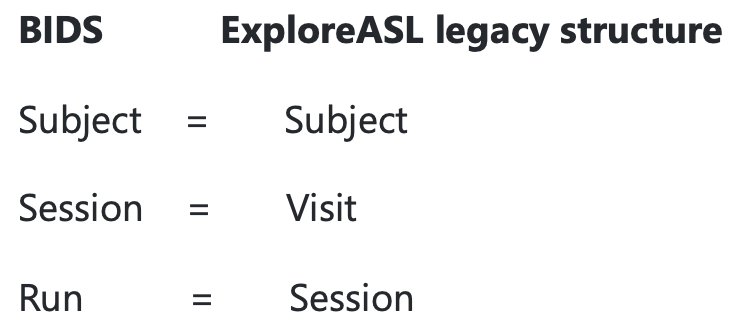
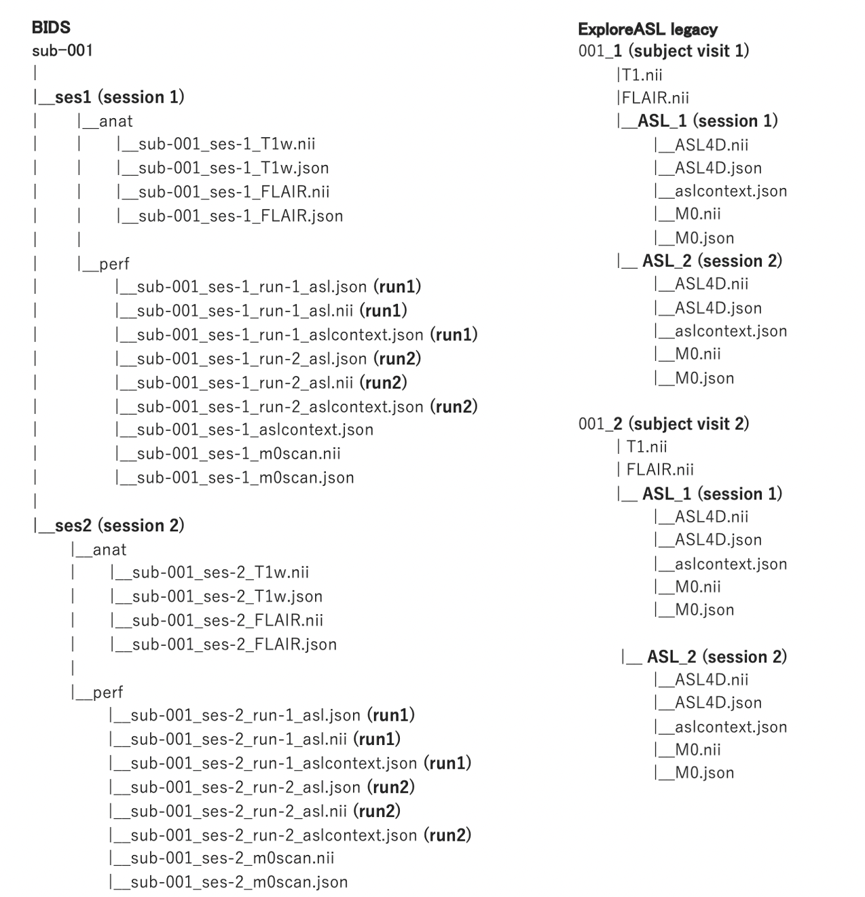

Tutorials (Execution)
ExploreASL & ASL-BIDS
Starting with version v1.7.0, ExploreASL will support an import workflow which allows the user to convert DICOM and NIFTI data to the ASL-BIDS format. Since ExploreASL does not fully utilize the BIDS format internally, there will also be an automated workflow to convert from ASL-BIDS to the ExploreASL legacy format (starting with version v1.10.0, this will be done automatically if needed). In the following subsections we will explain how you can use the automated ExploreASL import workflow to convert your input data to ASL-BIDS and how you can process it.
Basic ExploreASL Execution
To start ExploreASL, you utilize the ExploreASL script. Below is a basic description of the most typical use cases:
Initialization only: To only initialize the package, you execute:
[x] = ExploreASL();
Initialization adds paths to all atlases and functions needed for ExploreASL execution. Initialization is also run automatically before any command for processing or importing data.
Processing ASL-BIDS data:
To fully process data in ASL-BIDS format located in drive/.../datasetRoot/rawdata (note that since version v1.10.0, the rawdata are converted to the Legacy format in derivatives automatically without needing to call the import:
[x] = ExploreASL('drive/.../datasetRoot', 0, 1);
Importing DICOM to ASL-BIDS:
To import DICOM data located in drive/.../datasetRoot/sourcedata and convert them to ASL-BIDS format (see more in Tutorial on Import):
[x] = ExploreASL('drive/.../datasetRoot', [1 1 0], 0);
Importing DICOM to ASL-BIDS:
To import DICOM data located in drive/.../datasetRoot/sourcedata to ASL-BIDS and fully process them:
[x] = ExploreASL('drive/.../datasetRoot', [1 1 0], 1);
Structural and ASL processing of ASL-BIDS data:
To run the Structural and ASL processing on data in ASL-BIDS format located in drive/.../datasetRoot/rawdata:
[x] = ExploreASL('drive/.../datasetRoot', 0, [1 1 0]);
Population module on pre-processed data:
To run the Population module on previously processed data stored in drive/.../datasetRoot/derivatives/ExploreASL:
[x] = ExploreASL('drive/.../datasetRoot', 0, [0 0 1]);
ExploreASL Execution - full input description
Below is a complete description of all the options for import and processing. ExploreASL is executed with the following command:
[x] = ExploreASL([DatasetRoot, ImportModules, ProcessModules, bPause, iWorker, nWorkers])
Parameter descriptions:
-
DatasetRoot: Path to the BIDS dataset root directory, which contains either the DICOM data insourcedatasubfolder, or ASL-BIDS data inrawdatasubfolder or already processed data with ExploreASL inderivatives\ExploreASLsubfolder (OPTIONAL)DatasetRoot Type CHAR ARRAYDefault Prompting user input -
ImportModules: Multi-step import workflow. Note that either a vector is provided or a scalar (which is then translated as[1 1 0], i.e. skipping the deface module unless explicitly turned on) (OPTIONAL). Note that the BIDS to LEGACY conversion from the ASL-BIDS inrawdatato ExploreASL format inderivatives\ExploreASLis now run automatically when needed as part of the Processing ModuleDCM2NII: Run the DICOM to NIFTI conversion fromsourcedatasubfolder and saves toderivatives\ExploreASL\tempsubfolderNII2BIDS: Run the NIFTI to BIDS conversion from subfolderderivatives\ExploreASL\tempand saves the complete ASL-BIDS data to arawdatasubfolderDEFACE: Run the defacing of structural scans with input and output to therawdatasubfolder
ImportModules DCM2NII NII2BIDS DEFACE Type BOOLEANBOOLEANBOOLEANDefault falsefalsefalse -
ProcessModules: Multi-step processing pipeline. Either a full vector, or scalar turning all options either on or off, can be used (OPTIONAL)STRUCTURAL: Run the Structural ModuleASL: Run the ASL ModulePOPULATION: Run the Population Module
ProcessModules STRUCTURAL ASL POPULATION Type BOOLEANBOOLEANBOOLEANDefault falsefalsefalse -
bPause: Pause workflow before ExploreASL pipeline to review input parameters (OPTIONAL)bPause Type BOOLEANDefault false -
iWorker: Allows parallelization when called externally - see the option below (OPTIONAL)iWorker Type INTEGERDefault 1 -
nWorkers: Allows parallelization when called externally - it assumes that the user calls himselfnWorkersinstances of ExploreASL and that the current instance has numberiWorker. It (OPTIONAL)nWorkers Type INTEGERDefault 1
In the following examples, we want to show how you can use the revised import workflow and how the conventional processing is done now. Another example for the import module is shown in the Import Tutorial.
DICOM source data
Converting DICOM source data according to the ASL BIDS standard can be done using the new import workflow. For the upcoming release v1.7.0 we're preparing an exemplary DICOM source dataset based on the ASL DRO. To run this workflow, you have to use the path to your dataset root directory. This dataset root directory should contain a sourceStructure.json file, a studyPar.json file (see Import Tutorial for details) and optionally also a dataPar.json file (see the Processing Tutorial Processing Tutorial). Do not forget to set up the source dataset in drive/.../datasetRoot/sourcedata correctly. We're working on a flavor library, to enable the import and processing of a wide variety of different sequence, vendor, and scanner combinations.
The first step to convert your DICOM source data to NIFTI source data is to run the following command:
[x] = ExploreASL('drive/.../datasetRoot', [1 0 0],1);
Here we tell ExploreASL to run the DCM2NII import module by setting the first boolean variable of the ImportModules to 1. The output is save to drive/.../datasetRoot/derivatives/ExploreASL/temp
NIFTI source data
Let's assume we have intermediate NIFTI data now in drive/.../datasetRoot/derivatives/ExploreASL/temp. To convert this intermediate data to ASL-BIDS raw data, we have to run the second part of the import workflow. To run the second step, we set the second variable of the ImportModules to 1. Similar to the previous step, we pass the datasetRoot directory to ExploreASL. The output is then written to drive/.../datasetRoot/rawdata.
[x] = ExploreASL('drive/.../datasetRoot', [0 1 0], 0);
Data defacing
There's also a new option to deface your structural scans. To do this, you can run the third step of the import workflow. This is done by setting the third variable of the ImportModules to 1. Similar to the previous steps, we pass the DatasetRoot directory to ExploreASL. Both input and output directory is drive/.../datasetRoot/rawdata
[x] = ExploreASL('drive/.../datasetRoot', [0 0 1], 0);
Data in ExploreASL legacy format
Right now, ExploreASL still uses the conventional data structure. The conversion from our ASL-BIDS rawdata to the ExploreASL legacy format is done (since version v1.10.0) automatically as the first step of the Processing Module if needed. The input ASL-BIDS data from drive/.../datasetRoot/rawdata are converted to drive/.../datasetRoot/derivatives/ExploreASL/
This step will also copy and adapt your provided drive/.../datasetRoot/rawdata/dataPar.json file to drive/.../datasetRoot/derivatives/ExploreASL/dataPar.json or create a default one if drive/.../datasetRoot/rawdata/dataPar.json is missing. To adapt your pipeline, you can edit the drive/.../datasetRoot/derivatives/ExploreASL/dataPar.json file before running the Structural and ASL modules.
ExploreASL processing pipeline
If you just want to use the conventional ExploreASL processing pipeline, you can simply turn off the import workflow by setting all ImportModules variables to 0 individually or by using a single 0 for the ImportModules. This results in the following notation:
[x] = ExploreASL('drive/.../datasetRoot', 0, 1);
To run individual modules, you can set the ProcessModules individually. If you only want to the Structural Module for example, you can use a [1 0 0] vector. To run all modules, you can use a single 1 or a vector of ones, which should look like this [1 1 1]. Running the just the structural module or the full processing pipeline can therefore be done like this as well:
[x] = ExploreASL('drive/.../datasetRoot', 0, [1 0 0]);
[x] = ExploreASL('drive/.../datasetRoot', 0, [1 1 1]);
BIDS format vs Legacy format
Note that the ASL-BIDS standard was introduced relatively recently and there are still certain differences between BIDS and ExploreASL terminology as shown below:

In ExploreASL, we differentiate visits and sessions mostly by the fact that within a single session a single structural scan (for each contrast) and one or more ASL scans are acquired (typically during the same scanning session and with or without repositioning). Different visits are separated by days/months or in special case several hours and the whole scanning protocol is acquired on each Visit including one or more ASL scan. So across sessions, the same structural images are used. Across Visits, the structural scans are newly acquired. In BIDS-ASL, we use the terms Sessions and Runs instead of Visits and Sessions in ExploreASL.
Here is an example:

Full pipeline
Running the full pipeline including both import workflow and processing pipeline, can be done by setting both ImportModules and ProcessModules to 1.
[x] = ExploreASL('drive/.../datasetRoot', 1, 1, 0, 1, 1);
Any sensible combinations of import and processing submodules are of course also possible.
Changes in v1.7.0
Compared to versions before v1.7.0, we changed both name and behavior of the SkipPause variable. The variable is called bPause now. Setting it to true or 1, will result in the pipeline being paused before the processing. We removed the iModules, but the functionality of ProcessModules is basically the same. We use boolean notation now, so instead of [1 2 3] you have to use [1 1 1] now.
The overall import functionality is a work in progress right now. We expect stable behavior in release v1.7.0 though. If you plan on using the develop branch until then, you have to live with more or less unstable import behavior.
Changes in v1.10.0
BIDS to Legacy conversion is now not done as the last step of import, but it is run automatically when needed (i.e. BIDS data existing and Legacy data not present) as the first step of the Processing Module.